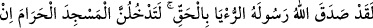
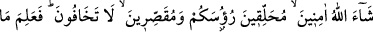
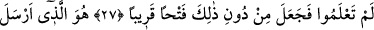
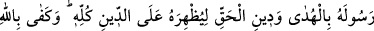
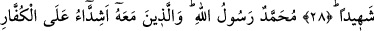
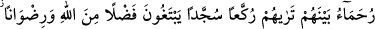
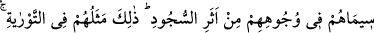
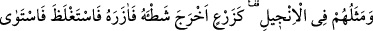
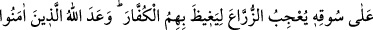
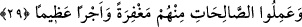

MUHAMMED
ALLAH’IN ELÇİSİDİR
27. Andolsun ki Allah, elçisinin rüyasını doğru çıkardı. Allah dilerse siz güven
içinde başlarınızı tıraş etmiş ve kısaltmış olarak, korkmadan Mescid-i Haram’a
gireceksiniz. Allah sizin bilmediğinizi bilir. İşte bundan önce size yakın bir fetih
verdi.
28. Bütün dinlerden üstün kılmak üzere, Peygamberini hidayet ve hak din ile
gönderen O’dur. Şâhid olarak Allah yeter.
29. Muhammed Allah’ın elçisidir. Beraberinde bulunanlar da kâfirlere karşı çetin,
kendi aralarında merhametlidirler. Onları rükûya varırken, secde ederken
görürsün. Allah’tan lütuf ve rıza isterler. Onların nişanları yüzlerindeki secde
izidir. Bu, onların Tevrat’taki vasıflarıdır. İncil’deki vasıfları da şöyledir: Onlar
filizini yarıp çıkarmış, gittikçe onu kuvvetlendirerek kalınlaşmış, gövdesi üzerine
dikilmiş bir ekine benzerler ki bu, ekicilerin de hoşuna gider. Allah böylece onları
çoğaltıp kuvvetlendirmekle kâfirleri öfkelendirir. Allah onlardan inanıp iyi işler
yapanlara mağfiret ve büyük mükâfat vaad etmiştir.
Cenâb-ı Hakk’ın peygamberine gösterdiği sâdık rüyanın gerçekleşmesi meselesi
sûrenin başında îzâh edilmişti. Nitekim Hz. Peygamber (s.a.) Hudeybiye’ye çıkmadan
önce rüyasında, kendisi ve ashâbını emîn bir şekilde, saçlarını gerek tamamen keserek,
gerekse kısaltarak traş etmiş hâlde Mekke’ye girdiklerini görmüş ve rüyasını hemen